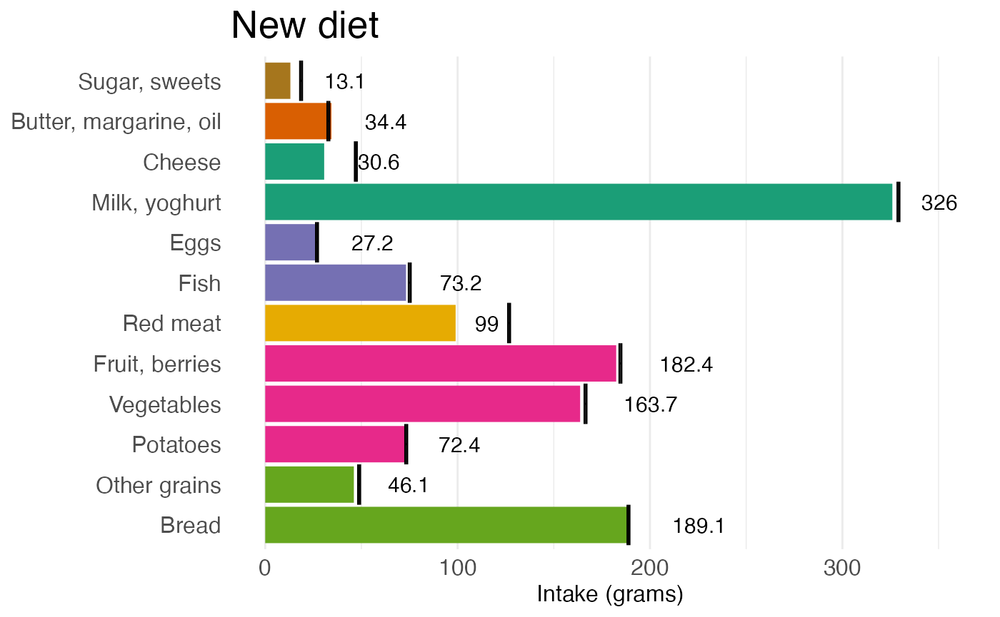
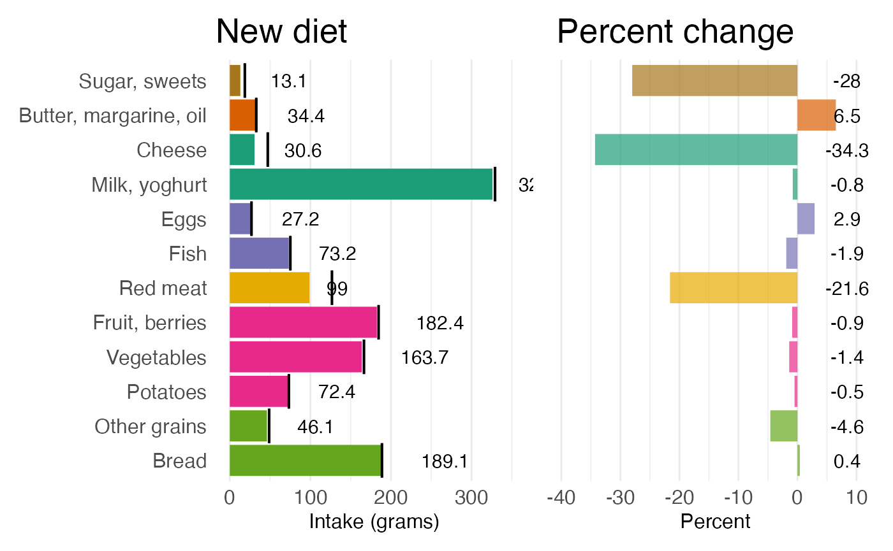

This is the first vignette document for how to use the package.
Let us try to load a dataset.
head(foodname_group)
#> group_macro food_name
#> 1 grain Bread
#> 2 grain Other grains
#> 3 grain Cakes
#> 4 fruit_vege Potatoes
#> 5 fruit_vege Vegetables
#> 6 fruit_vege LegumesGive it a try
Input data
data_newdiet
#> food_name current new absolute_change percent_change
#> 1 Bread 188.32 189.11 0.79 0.4
#> 2 Other grains 48.31 46.07 -2.24 -4.6
#> 3 Potatoes 72.79 72.45 -0.35 -0.5
#> 4 Vegetables 165.99 163.69 -2.30 -1.4
#> 5 Fruit, berries 184.13 182.43 -1.70 -0.9
#> 6 Red meat 126.26 98.97 -27.29 -21.6
#> 7 Fish 74.62 73.18 -1.44 -1.9
#> 8 Eggs 26.41 27.18 0.77 2.9
#> 9 Milk, yoghurt 328.65 325.98 -2.67 -0.8
#> 10 Cheese 46.60 30.64 -15.96 -34.3
#> 11 Butter, margarine, oil 32.32 34.41 2.09 6.5
#> 12 Sugar, sweets 18.14 13.07 -5.08 -28.0
#> diet_bound_lwr diet_bound_upr
#> 1 18.83 343.8
#> 2 4.83 155.7
#> 3 7.28 230.7
#> 4 16.60 419.7
#> 5 18.41 552.7
#> 6 12.63 299.6
#> 7 7.46 302.9
#> 8 2.64 111.6
#> 9 32.86 900.6
#> 10 4.66 121.6
#> 11 3.23 71.4
#> 12 1.81 66.0We try to visualize the results
ddd <- prep_diet_comparison_gram(data_dietsummary = data_newdiet)
p1 <- plot_diet_comparison_gram(plot_obj = ddd,
title_text = 'New diet',
axis_x_text = 'Food groups',
axis_y_text = 'Intake (grams)')
p1
Percentage
ddd <- prep_diet_comparison_percent(data_dietsummary = data_newdiet)
p2 <- plot_diet_comparison_percent(plot_obj = ddd,
title_text = 'Percent change',
axis_x_text = 'Food groups',
axis_y_text = 'Percent')
p2
Can actually put them side by side.
library(patchwork)
p1 + p2 + plot_layout(nrow = 1)